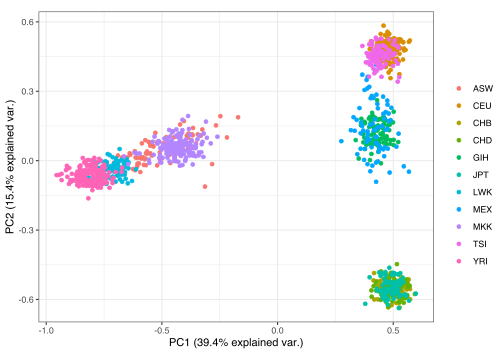
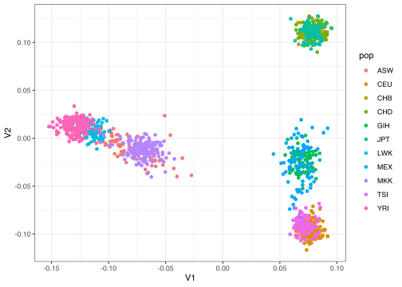
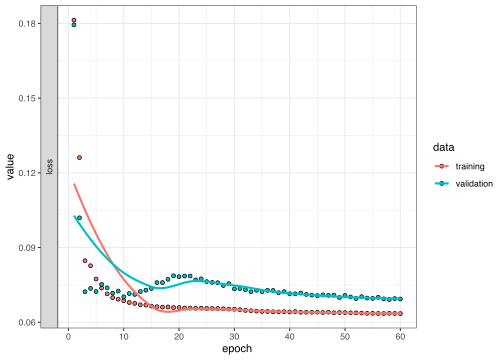
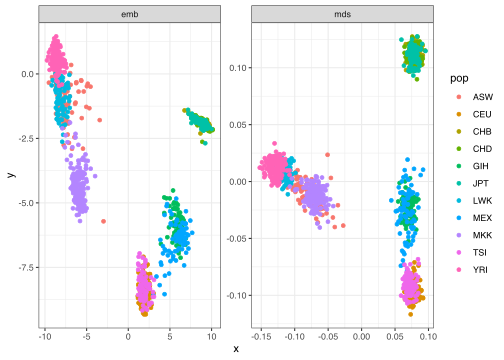

Autoencoder Lab in R
visualizing HapMap phase 3 populations
Marcin Kierczak | NBIS | 04-Dec-2020

1 Synopsis
In this lab, we will use chip genotyping data from Hap Map phase 3 project. These data come from a number of humans belonging to different ethnic groups/populations. The groups are genetically distinct but, in some cases, closely related and thus somewhat difficult to distinguish. We will first try to visualize population structure using classical dimensionality reduction techniques like PCA and MDS and next, we will build autoencoder and see if it does any better in separating different populations. We will work in R and use keras interface to TensorFlow.
2 Working environment
Before we begin, we have to set up a proper working 🏭 environment. Follow the points below on your way to success. 😄
- Install R package
renvthat will manage your working environment in a way similar toConda🐍. It is a bit smarter thanConda, since libraries can be shared between projects, so using it across your projects will (hopefully) not result in disk space shortage 😕.
install.packages('renv')Download my
renv.lockfile. It is a text file that tells therenvpackage how to re-create the environment. Place the file in your working 📁.Re-create the environment from the
renv.locksnapshot.
renv::restore(lockfile = 'renv.lock')- Install
keras. Keras will be installed by the Rkeraspackage that will, in turn, use eithercondaorvirtualenv. It will also install TensorFlow for you.
keras::install_keras()- Congratulate yourself! 💪
3 Background
The purpose of this lab is to evaluate the possibility of using autoencoder as a replacement/complement to more “classical” linear dimensionality reduction methods such as PCA or MDS. These are commonly used for, e.g. visualizing population structure in genetics. One of the main motivations is that when inferring genomic kinship from a large number of markers M (large enough to capture population structure at fine level), one necessarily introduces correlations between variables, here, genetic markers. This is predominantly due to the linkage disequilibrium, but also due to the large M that, even by pure chance, introduces correlated variables to the data. This correlation structure introduces non-linearity that, in turn, makes the data not very well suitable for PCA/MDS since both approaches rely on computing kinship matrix determinants that, for a lot of highly correlated variables, become 0 and prevent us from computing exact solutions (division by zero is undefined).
Here, the working hypotheses is that by choosing non-linear activation functions, e.g. ReLU, one can circumvent this problem and use autoencoder approach to reduce the dimensionality by embedding kinship data in a low dimensional latent representation space that, in turn, can easily be visualized. The idea emerged during the EMBL conference Reconstructing the Human Past, Heidelberg 🍺, April 2019, in a number of discussions with Nikolay Oskolkov 👨🔬 and other conference participants: 🐿, 🦓 and 🐉.
3.1 Data
Data comes from the HapMap phase 3 project. Here, for computational feasibility, we will be using smaller dataset. I have pre-selected 5,000 autosomal markers with call rate of 100%. We will not be dealing with missing data here although autoencoders, in contrast to PCA and MDS, can.
HapMap 3 populations:
- ASW – African 🌍 ancestry in Southwest USA 🇺🇸
- CEU – Utah residents with Northern and Western European 🌍 ancestry from the CEPH collection
- CHB – Han Chinese in Beijing, China 🇨🇳
- CHD – Chinese 🇨🇳 in Metropolitan Denver, Colorado ⛰
- GIH – Gujarati Indians 🇮🇳 in Houston, Texas
- JPT – Japanese in Tokyo, Japan 🇯🇵
- LWK – Luhya in Webuye, Kenya 🇰🇪
- MEX – Mexican 🇲🇽 ancestry in Los Angeles, California 🐻
- MKK – Maasai in Kinyawa, Kenya 🇰🇪
- TSI – Toscans 🛵 in Italy 🇮🇹
- YRI – Yoruba in Ibadan, Nigeria 🇳🇬
4 Preparations
First, we need to download the autosomal_5k.rdat dataset. Data are stored as an R data object, more specifically, a GenABEL::gwaa-data class object consisting of 1184 individuals, each genotyped at 5000 loci. The loci are randomly spread across autosomes. If anyone is curious, the code below was used to generate this subset of the original dataset.
data <- load.gwaa.data("hapmap3_r2_b36_fwd.consensus.qc.poly.csv", "hapmap3_r2_b36_fwd.consensus.qc.poly.out")
data_auto <- data[, autosomal(data)]
rm(data)
snp_subset <- sample(1:nsnps(data_auto), size = 50000, replace = F)
data_auto <- data_auto[,snp_subset]
qc1 <- check.marker(data_auto, callrate = 1.0)
data_autosomal <- data_auto[qc1$idok, qc1$snpok]
snp_subset <- sample(1:nsnps(data_autosomal), size = 5000, replace = F)
data_autosomal <- data_autosomal[,snp_subset]
save(data_autosomal, file = "./autosomal_5k.rdat")We will begin by setting your working directory and loading necessary packages (they should be automatically installed when you restored my environment using renv::restore()).
library(renv)
library(here)
library(GenABEL)
library(keras)
library(kerasR)
library(ggplot2)
library(ggbiplot)
here::here() # check what is our current working directory
base::load(here::here('assets/autosomal_5k.rdat'))## [1] "/Users/kiero/Dropbox/WABI/Teaching/autoencoders_workshop"5 Benchmark
First, to have some sort of a benchmark 📏, we will do PCA and MDS (which should be more or less equivalent) on the genomic kinship matrix to visualize patterns present in the data.
# Compute genomic kinship-based distance
gkin <- ibs(data_autosomal, weight = 'freq')
dm <- as.dist(.5 - gkin) # Normalize it5.1 PCA
pca <- stats::prcomp(dm)
g <- ggbiplot(pca, obs.scale = 1, var.scale = 1,
groups = data_autosomal@phdata$population, ellipse = F,
circle = TRUE, var.axes = F) +
scale_color_discrete(name = '') +
theme(legend.direction = 'horizontal',
legend.position = 'top') +
theme_bw()
print(g)
5.2 MDS
ibs <- as.data.frame(cmdscale(dm))
ibs <- cbind(ibs, pop = data_autosomal@phdata$population)
ggplot(ibs, mapping = aes(x=V1, y=V2, col=pop)) +
geom_point() +
theme_bw()
6 Autoencoder
6.1 Model parameters
Below, we define model parameters: loss function 📈 set to the mean squared error and activation layer set to ReLU. One can refer to Keras docs for more insights.
loss_fn <- 'mean_squared_error'
act <- 'relu'6.2 Prepare input
Input data is first normalized so that:
- homozygotes
AAare set to 1 - heterozygotes
aAandAato 0.5 and - homozygotes
aato 0.
Next, the data are randomly 🎲 split into the validation (20%) and the training (80%) set.
# Encode genotypes
geno_matrix <- as.double(data_autosomal)
geno_tensor <- geno_matrix/2 # alternative approach: keras::to_categorical(geno_matrix)
# Randomly split into the training and the validation set
n_rows <- dim(geno_tensor)[1]
train_idx <- sample(1:n_rows, size = 0.8 * n_rows, replace = F)
train_data <- geno_tensor[train_idx, ]
valid_data <- geno_tensor[-train_idx, ]6.3 Define the architecture
Here, we define the architecture 🏙 of our autoencoder. Autoencoders are symmetrical creatures, like 🦋. It implies that the decoder is the reversal of the encoder, symmetrical about the low-D latent representation layer (a.k.a bottleneck 🍾, in our case 2D). Some dropout layers were added for regularization, i.e. to prevent overfitting.
input_layer <- layer_input(shape = dim(train_data)[2])
encoder <-
input_layer %>%
layer_dense(units = 1500, activation = act) %>%
layer_batch_normalization() %>%
layer_dropout(rate = 0.2) %>%
layer_dense(units = 500, activation = act) %>%
layer_dropout(rate = 0.1) %>%
layer_dense(units = 25, activation = act) %>%
layer_dense(units = 2) # bottleneck
decoder <-
encoder %>%
layer_dense(units = 25, activation = act) %>%
layer_dropout(rate = 0.2) %>%
layer_dense(units = 500, activation = act) %>%
layer_dropout(rate = 0.1) %>%
layer_dense(units = 1500, activation = act) %>%
layer_dense(units = dim(train_data)[2], activation = "sigmoid")
autoencoder_model <- keras_model(inputs = input_layer, outputs = decoder)
autoencoder_model %>% compile(
loss = loss_fn,
optimizer = 'adam',
metrics = c() # here you specify a list of metrics, like accuracy or AUC when applicable
)Now, we can 👀 how our compiled model looks like:
summary(autoencoder_model)## Model: "model"
## ________________________________________________________________________________
## Layer (type) Output Shape Param #
## ================================================================================
## input_1 (InputLayer) [(None, 5000)] 0
## ________________________________________________________________________________
## dense_3 (Dense) (None, 1500) 7501500
## ________________________________________________________________________________
## batch_normalization (BatchNormaliza (None, 1500) 6000
## ________________________________________________________________________________
## dropout_1 (Dropout) (None, 1500) 0
## ________________________________________________________________________________
## dense_2 (Dense) (None, 500) 750500
## ________________________________________________________________________________
## dropout (Dropout) (None, 500) 0
## ________________________________________________________________________________
## dense_1 (Dense) (None, 25) 12525
## ________________________________________________________________________________
## dense (Dense) (None, 2) 52
## ________________________________________________________________________________
## dense_7 (Dense) (None, 25) 75
## ________________________________________________________________________________
## dropout_3 (Dropout) (None, 25) 0
## ________________________________________________________________________________
## dense_6 (Dense) (None, 500) 13000
## ________________________________________________________________________________
## dropout_2 (Dropout) (None, 500) 0
## ________________________________________________________________________________
## dense_5 (Dense) (None, 1500) 751500
## ________________________________________________________________________________
## dense_4 (Dense) (None, 5000) 7505000
## ================================================================================
## Total params: 16,540,152
## Trainable params: 16,537,152
## Non-trainable params: 3,000
## ________________________________________________________________________________6.4 The training 🏃 phase
We are ready to train our model now. By setting shuffle = T, we make sure the training data will be 🎲 re-shuffled 🎲 in each epoch and batch_size = 256 tells keras to use 256 samples per gradient update (improves efficiency). We want 20% of the training data to be used for validation at each epoch validation_split = .2 and we can also specify some custom callback functions to, e.g. introduce custom early stopping 🛑 criteria.
history <- autoencoder_model %>% fit(
x = train_data,
y = train_data,
epochs = 60,
shuffle = T,
batch_size = 256,
validation_split = .2
#callbacks = list(checkpoint, early_stopping)
)
plot(history) + theme_bw()
Now the model has been trained, loss and accuracy are evaluated on both the initial training data at each epoch 🎲 split into the new training (80%) and the new test (20%) set.
6.4.1 Encoder
Following the training phase, we will build 🏗 the encoder.
autoencoder_weights <- autoencoder_model %>% keras::get_weights()
keras::save_model_weights_hdf5(object = autoencoder_model,
filepath = './autoencoder_weights.hdf5',
overwrite = TRUE)
encoder_model <- keras_model(inputs = input_layer, outputs = encoder)
encoder_model %>% keras::load_model_weights_hdf5(filepath = "./autoencoder_weights.hdf5",
skip_mismatch = TRUE,
by_name = T)
encoder_model %>% compile(
loss = loss_fn,
optimizer = 'adam',
metrics = c('MeanSquaredError')
)6.4.2 Embedding original data
Now, original data can be embedded in the low-dimensional space using the encoder.
embeded_points <-
encoder_model %>%
keras::predict_on_batch(x = geno_tensor)6.5 Final results
Now, we can see how the embeddings compare with the MDS approach.
embedded <- data.frame(embeded_points[,1:2],
pop = data_autosomal@phdata$population,
type='emb')
mds <- cbind(ibs, type='mds')
colnames(mds) <- c('x', 'y', 'pop', 'type')
colnames(embedded) <- c('x', 'y', 'pop', 'type')
dat <- rbind(embedded, mds)
dat %>% ggplot(mapping = aes(x=x, y=y, col=pop)) +
geom_point() +
facet_wrap(~type, scales = "free") +
theme_bw() Are the results produced by autoencoder better? I think it still has problems separating two non-homogenous clusters but it seems that the resolution achieved on the big clumps is better. Probably we should measure this in a more objective way, but since you know how to make autoencoders in R, you can do all sorts of experiments 🔎 now! Good luck with your future endavours.
7 Tasks and questions
7.1 Training phase
- Why both
xandyhave the same value? - Try using external validation data instead. Set
validation_data = list(valid_data, valid_data)that will override thevalidation_splitargument. What happens? Remember that, with every epoch, there may occur some 💧leakage💧 of the data from the validation set to the training set via network weights… - What happens if we do not shuffle?
- How does increasing the number of epochs affect model’s performance? Try, e.g. 120 epochs.
- Introduce an early stopping criterion using callback function. A custom callback function may look like:
# checkpoint <- callback_model_checkpoint(
# filepath = "model.hdf5",
# save_best_only = TRUE,
# period = 1,
# verbose = 1
# )
#
# early_stopping <- callback_early_stopping(patience = 5)7.2 More experiments
Try using autoencoder to reduce dimensionality to more dimensions than 2, say 20 and apply PCA on this latent space to visualize it in 2D. Did you get better resolution? (non-linear -> linear reduction)
Can you think of using autoencoder on a latent space obtained with MDS or PCA (linear -> non_linear reduction).
What about chaining two non-linear methods, e.g. UMAP on top of autoencoder?
8 Reproducibility note
Experimental conditions:
- Moon phase: 🌖.
- Sun in the Zodiac sign of: 🏹.
- Chinese year of: 🐀.
- Recorded average strength of electromagic field: \(0.74\mu M\) 🧙.
- Witcher 🐺 on duty: Geralt of Rivia.
9 Session info
## R version 4.0.3 (2020-10-10)
## Platform: x86_64-apple-darwin17.0 (64-bit)
## Running under: macOS Big Sur 10.16
##
## Matrix products: default
## BLAS: /Library/Frameworks/R.framework/Versions/4.0/Resources/lib/libRblas.dylib
## LAPACK: /Library/Frameworks/R.framework/Versions/4.0/Resources/lib/libRlapack.dylib
##
## locale:
## [1] en_US.UTF-8/en_US.UTF-8/en_US.UTF-8/C/en_US.UTF-8/en_US.UTF-8
##
## attached base packages:
## [1] grid stats graphics grDevices datasets utils methods
## [8] base
##
## other attached packages:
## [1] ggbiplot_0.55 scales_1.1.1 plyr_1.8.6 ggplot2_3.3.2
## [5] kerasR_0.6.1 keras_2.3.0.0 GenABEL_1.8-0 GenABEL.data_1.0.0
## [9] MASS_7.3-53 here_1.0.0 renv_0.12.3 captioner_2.2.3
## [13] bookdown_0.21 knitr_1.30
##
## loaded via a namespace (and not attached):
## [1] reticulate_1.18 xfun_0.19 purrr_0.3.4 splines_4.0.3
## [5] lattice_0.20-41 colorspace_2.0-0 generics_0.1.0 vctrs_0.3.5
## [9] htmltools_0.5.0 mgcv_1.8-33 emo_0.0.0.9000 yaml_2.2.1
## [13] base64enc_0.1-3 rlang_0.4.9 pillar_1.4.7 glue_1.4.2
## [17] withr_2.3.0 lifecycle_0.2.0 tensorflow_2.2.0 stringr_1.4.0
## [21] munsell_0.5.0 gtable_0.3.0 evaluate_0.14 labeling_0.4.2
## [25] tfruns_1.4 Rcpp_1.0.5 jsonlite_1.7.1 farver_2.0.3
## [29] digest_0.6.27 stringi_1.5.3 rprojroot_2.0.2 tools_4.0.3
## [33] magrittr_2.0.1 tibble_3.0.4 crayon_1.3.4 whisker_0.4
## [37] pkgconfig_2.0.3 zeallot_0.1.0 ellipsis_0.3.1 Matrix_1.2-18
## [41] lubridate_1.7.9.2 assertthat_0.2.1 rmarkdown_2.5 rstudioapi_0.13
## [45] R6_2.5.0 nlme_3.1-149 compiler_4.0.3Built on: 04-Dec-2020 at 12:34:04.
2020 NBIS | SciLifeLab